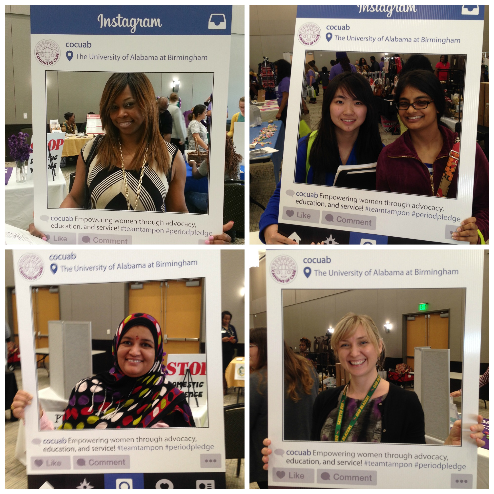

Recent News
 |
The WellHouse - First Care Package Drop OffMarch 16th, 2016The co-VPs of Distribution, Alisa Byrd and Sandhya Krishna, are responsible for coordinating and organizing drop-offs of care packages with partnering organizations. They keep detailed records, create distribution schedules, and keep in touch with partnership contacts to gain feedback and improve our care package delivery system. Our first package drop off was a success, with sixty care packages donated to The WellHouse! Camions of Care at UAB has partnered with The WellHouse, a non-profit, faith-based organization dedicated to the rescue and recovery of women who are victims of sexual exploitation. The WellHouse is the only 24-hour shelter offering immediate housing assistance to women being prostituted in the Southeast. For more information about this organization, please visit their website to learn more about their programs and mission. We are so excited to partner with The WellHouse to bring greater awareness to the victims of sex trafficking and help this vulnerable population of women by providing basic feminine hygiene care packages. |
International Women’s Day 2016March 7th, 2016UAB’s Student Multicultural and Diversity Programs hosted its first International Women’s Day event on Monday, March 7th, 2016 at the new Hill Student Center. Local female-owned vendors sold their products to event attendees and UAB student organizations and community groups had tables set up with information and interactive activities.
Camions of Care at UAB spread the message of advocacy, education, and service regarding menstrual health to visitors as well as recruited new members while at the event. We also had an Instagram contest where students and faculty could submit their name into the raffle by hashtagging #cocuab with our photo prop. The winner of our contest, Gabby Brow, received a Camions of Care goodie bag at the next general meeting. We loved having the opportunity to interact with the UAB community and collaborate with other women’s organizations! |  |
First Care Package Construction EventFebruary 28th, 2016Camions of Care at UAB hosted its first Care Package Construction event on Saturday, February 28th, 2016 at the Spencer Honors House. After a successful donation drive in on-campus residence halls, volunteers put together care packages using the menstrual hygiene products collected. Students donated 171 pantiliners, 216 pads, and 406 tampons! These donations were used to create sixty care packages, with each care package consisting of six pads, six tampons, five pantiliners and a roll of toilet paper. With the help of over twenty volunteers, it took less than two hours to complete everything. |